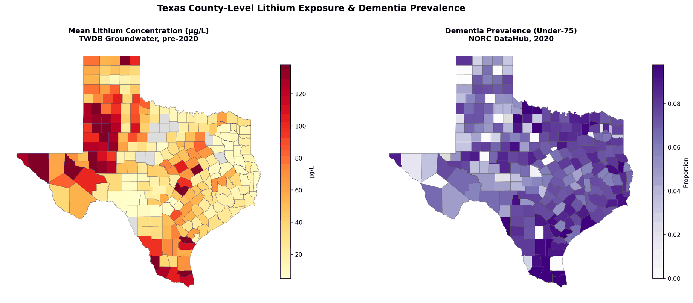

About
I build end-to-end data science pipelines — from messy raw data to production-ready models and clear stakeholder communication — using Python, R, and SQL. Currently interning at Goosehead Insurance on Databricks and Snowflake, and completing my M.S. in Data Science at SMU. Open to full-time data scientist roles starting fall 2026.
Experience
- Building and deploying machine learning models using Python (pandas, NumPy, scikit-learn, Seaborn, PySpark) on Databricks
- Querying and transforming large-scale insurance datasets in Snowflake using SQL
- Collaborating on data pipelines and version-controlled workflows via GitLab
Projects

Predicted employee attrition for Frito-Lay HR data, patient heart-disease risk, hospital length-of-stay, real-estate sale price, crab age, and Eli Lilly stock price — six classification and regression projects end to end.
Benchmarked 6 clustering algorithms on 100K health records and mined association rules from 541K retail transactions with Apriori and FP-Growth.
64-table normalized MySQL database of Texas groundwater data (20+ years, 254 counties), ETL pipelines, and interactive Folium choropleth maps.
Executive presentations and infographics for non-technical audiences — medical devices, NLP news digests, product analysis, and passion-project research.